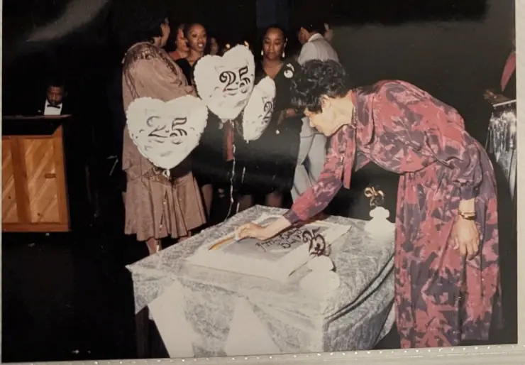

July 1990
Silver Anniversary Celebration
Speakers, presentations, group portraits, and guests at the 25th anniversary celebration.
Arts & Culture · South Berkeley
Photographs associated with the Black Repertory Group, a South Berkeley theater where Black dramatic performance, education, and community life have been closely connected.
The organization
Founded in 1964 by Nora and Birel Vaughn, the Black Repertory Group grew out of a church drama program that introduced young people to Black history and the work of Black playwrights. From its beginnings, theatrical performance was closely connected to education and community life.
The group developed from church performances into a theater in South Berkeley, providing a stage for Black dramatic works while creating opportunities for performers and audiences. Its history links theater to the broader cultural and civic life of the East Bay.
For the organization’s earlier history, see the Black Repertory Group’s history and Kerry L. Goldmann’s study of Black theater in Berkeley.
The photographs

July 1990
Speakers, presentations, group portraits, and guests at the 25th anniversary celebration.